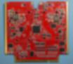

Cougs in Space
Chief Technical Officer
August 2017 - Present // Pullman, WA
Cougs in Space is Washington State University’s satellite club. Our target: launching WSU’s first of many CougSats, a 10cm CubeSat, into low earth orbit. CougSat-1’s primary mission is to develop a robust satellite for use on future missions. Secondary missions include broadcasting Go Cougs! and testing a germination experiment. The render below was created in Autodesk 3ds Max with the OctaneRender.
{kind=link}
Quickly after joining my first week at college, they recognized my engineering talents and put me into the position of Chief Technical Officer. My duties are to advise and manage all projects related to the satellite. Our club has over 200 members in 6 teams building 9 subsystems. All of which need to interface without fault when orbiting 400 km above Earth. There is a high attention to detail required to coordinate this sophisticated system. Inspired from my experience with the agile methodology at SEL, I introduced a project management system that is proving effective at maintaining our schedule. As CTO, I also advise the senior projects that prototype technologies for future satellites.
 My direct engineering contributions are primarily with the Electrical Systems team designing printed circuit boards. Since I have joined, I have produced 8 unique boards. Each board almost exclusively uses surface-mount technology components and must be engineered to a level of robustness to survive the harsh space conditions. The Electrical Power Subsystem (EPS, left) and Communications Subsystem (Comms) are two such boards that are the most critical. The EPS generates power from the sun, stores energy for eclipse operations, regulates voltage, and routes power to all the loads with intelligent monitoring and balancing. The Comms uses radio frequency amateur bands to transfer data between the ground station and the satellite, in addition to transmitting the secondary mission: Go Cougs!. Designing and routing the multi-layer Comms board was difficult due to the high efficiency requirements, large number of parts, and tight trace specifications.
In addition to electronics, I write software for the embedded microcontrollers and prototype mechanical solutions for various subsystems. The software, written in C++, uses Mbed as the operating system and hardware abstraction library. I have written many drivers to the various integrated circuits connected to the microcontroller. The next big software task for me is the Comms which has three software defined radios which has a lot of math and needs to be very reliable.
tags: agile, C++, CAD, debugging, electronics, PCBs, software, system engineering